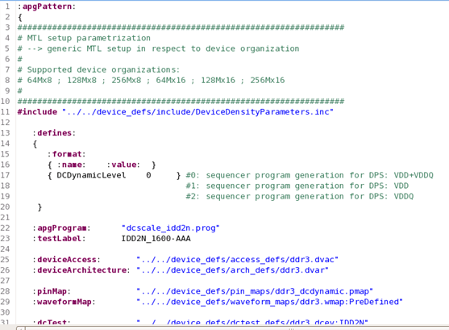

Syntax highlight in the MTP editor
When opening or programming MTL setup files in the editor view of the MTP perspective, you will see different types of syntaxes are associated with different colors.
The following table lists the colors for different syntaxes.
Syntax |
Color |
|---|---|
APIs |
Purple |
Keywords that are surrounded with colons. For example, :apgProgram: |
Dark red |
Standard preprocessor statements:
|
Dark red |
Strings that are surrounded with "". For example, "address scrambling" |
Blue |
Defined variables that are surrounded with ${ }. For example, ${DataBusWidth} |
Italic and blue |
Parameters that are defined by the :programParam: keyword in .apg files. |
Italic and blue |
Device access names defined in the device access file. |
Bold and blue |
Device parameters defined in the :deviceParam: block in the Device architecture file. |
Italic and blue |
Comments |
Green |
Subroutines |
Black |
Example

Functional changes
- Introduced in MTP 3.2.2
- MTP 3.3.1: Adds the color for device parameter.